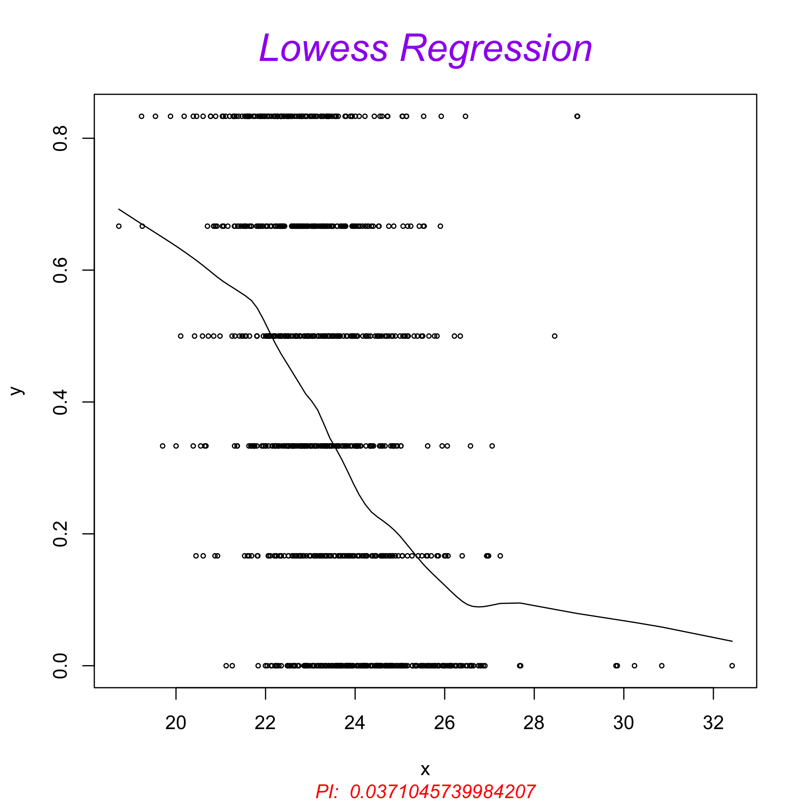

A multiple imputation framework for proteomics
Marie Chion, Christine Carapito and Frédéric Bertrand
This repository contains the R code and package for the mi4p methodology (Multiple Imputation for Proteomics), proposed by Marie Chion, Christine Carapito and Frédéric Bertrand (2021) in Accounting for multiple imputation-induced variability for differential analysis in mass spectrometry-based label-free quantitative proteomics, https://arxiv.org/abs/2108.07086.
The following material is available on the Github repository of the package https://github.com/mariechion/mi4p/.
The
Functionsfolder contains all the functions used for the workflow.The
Simulation-1,Simulation-2andSimulation-3folders contain all the R scripts and data used to conduct simulated experiments and evaluate our methodology.The
Arabidopsis_UPSandYeast_UPSfolders contain all the R scripts and data used to challenge our methodology on real proteomics datasets. Raw experimental data were deposited with the ProteomeXchange Consortium via the PRIDE partner repository with the dataset identifiers PXD003841 and PXD027800.
This website and these examples were created by M. Chion, C. Carapito and F. Bertrand.
Installation
You can install the released version of mi4p from CRAN with:
install.packages("mi4p")You can install the development version of mi4p from github with:
devtools::install_github("mariechion/mi4p")Examples
set.seed(4619)
datasim <- protdatasim()
str(datasim)
#> 'data.frame': 200 obs. of 11 variables:
#> $ id.obs: int 1 2 3 4 5 6 7 8 9 10 ...
#> $ X1 : num 99.6 99.9 100.2 99.8 100.4 ...
#> $ X2 : num 97.4 101.3 100.3 100.2 101.7 ...
#> $ X3 : num 100.3 100.9 99.1 101.2 100.6 ...
#> $ X4 : num 99.4 99.2 98.5 99.1 99.5 ...
#> $ X5 : num 98.5 99.7 100 100.2 100.7 ...
#> $ X6 : num 200 199 199 200 199 ...
#> $ X7 : num 200 200 202 199 199 ...
#> $ X8 : num 202 199 200 199 201 ...
#> $ X9 : num 200 200 199 201 200 ...
#> $ X10 : num 200 198 200 201 199 ...
#> - attr(*, "metadata")='data.frame': 10 obs. of 3 variables:
#> ..$ Sample.name: chr [1:10] "X1" "X2" "X3" "X4" ...
#> ..$ Condition : Factor w/ 2 levels "A","B": 1 1 1 1 1 2 2 2 2 2
#> ..$ Bio.Rep : int [1:10] 1 2 3 4 5 6 7 8 9 10It is the dataset shipped with package.
save(datasim, file="datasim.RData", compress = "xz")
attr(datasim, "metadata")
#> Sample.name Condition Bio.Rep
#> 1 X1 A 1
#> 2 X2 A 2
#> 3 X3 A 3
#> 4 X4 A 4
#> 5 X5 A 5
#> 6 X6 B 6
#> 7 X7 B 7
#> 8 X8 B 8
#> 9 X9 B 9
#> 10 X10 B 10AMPUTATION
MV1pct.NA.data <- MVgen(dataset = datasim[,-1], prop_NA = 0.01)
MV1pct.NA.data[1:6,]
#> X1 X2 X3 X4 X5 X6 X7
#> 1 99.62136 97.3689 100.28075 99.37889 98.48006 200.2803 199.8042
#> 2 99.86342 101.2731 100.86058 99.19046 99.71866 199.2618 200.3934
#> 3 100.21425 100.3024 99.07865 98.51259 100.02675 199.2197 202.2855
#> 4 99.84381 100.2009 101.18119 99.05420 100.18467 200.0615 199.3424
#> 5 100.36412 101.7019 100.59543 99.49536 100.65887 199.2520 199.4715
#> 6 100.70214 NA 101.65048 99.11372 100.94608 201.7471 198.7024
#> X8 X9 X10
#> 1 201.6095 199.7451 199.7543
#> 2 199.4827 199.7297 198.3984
#> 3 199.7161 198.8883 200.4094
#> 4 199.1865 200.9596 201.2789
#> 5 200.9682 199.9838 198.7303
#> 6 201.8030 199.4030 199.9033IMPUTATION
MV1pct.impMLE <- multi.impute(data = MV1pct.NA.data, conditions = attr(datasim,"metadata")$Condition, method = "MLE", parallel = FALSE)ESTIMATION
print(paste(Sys.time(), "Dataset", 1, "out of", 1))
#> [1] "2022-05-11 15:27:11 Dataset 1 out of 1"
MV1pct.impMLE.VarRubin.Mat <- rubin2.all(data = MV1pct.impMLE, metacond = attr(datasim, "metadata")$Condition) MODERATED T-TEST
MV1pct.impMLE.mi4limma.res <- mi4limma(qData = apply(MV1pct.impMLE,1:2,mean),
sTab = attr(datasim, "metadata"),
VarRubin = sqrt(MV1pct.impMLE.VarRubin.S2))
rapply(MV1pct.impMLE.mi4limma.res,head)
#> logFC.A_vs_B_logFC1 logFC.A_vs_B_logFC2 logFC.A_vs_B_logFC3
#> -101.21269 -99.27197 -100.47686
#> logFC.A_vs_B_logFC4 logFC.A_vs_B_logFC5 logFC.A_vs_B_logFC6
#> -100.07284 -99.11801 -99.82359
#> P_Value.A_vs_B_pval1 P_Value.A_vs_B_pval2 P_Value.A_vs_B_pval3
#> 0.00000 0.00000 0.00000
#> P_Value.A_vs_B_pval4 P_Value.A_vs_B_pval5 P_Value.A_vs_B_pval6
#> 0.00000 0.00000 0.00000
(simplify2array(MV1pct.impMLE.mi4limma.res)$P_Value.A_vs_B_pval)[1:10]
#> [1] 0 0 0 0 0 0 0 0 0 0
(simplify2array(MV1pct.impMLE.mi4limma.res)$P_Value.A_vs_B_pval)[11:200]<=0.05
#> [1] FALSE FALSE FALSE FALSE FALSE FALSE FALSE TRUE FALSE FALSE
#> [11] FALSE FALSE TRUE FALSE FALSE FALSE FALSE FALSE FALSE FALSE
#> [21] FALSE FALSE FALSE FALSE FALSE FALSE FALSE FALSE FALSE FALSE
#> [31] FALSE FALSE FALSE FALSE FALSE FALSE TRUE FALSE FALSE FALSE
#> [41] FALSE FALSE FALSE FALSE FALSE FALSE FALSE FALSE FALSE FALSE
#> [51] FALSE FALSE FALSE TRUE FALSE FALSE FALSE FALSE FALSE FALSE
#> [61] FALSE TRUE FALSE FALSE FALSE FALSE FALSE FALSE FALSE FALSE
#> [71] FALSE FALSE FALSE FALSE FALSE FALSE TRUE FALSE FALSE FALSE
#> [81] FALSE FALSE FALSE FALSE FALSE FALSE FALSE FALSE FALSE FALSE
#> [91] FALSE FALSE FALSE FALSE FALSE FALSE FALSE FALSE FALSE FALSE
#> [101] FALSE FALSE FALSE FALSE FALSE FALSE FALSE FALSE FALSE FALSE
#> [111] TRUE FALSE FALSE FALSE FALSE FALSE TRUE FALSE FALSE FALSE
#> [121] FALSE FALSE FALSE FALSE FALSE FALSE FALSE FALSE FALSE FALSE
#> [131] FALSE FALSE FALSE FALSE FALSE FALSE FALSE TRUE FALSE FALSE
#> [141] FALSE FALSE FALSE FALSE FALSE FALSE FALSE FALSE FALSE FALSE
#> [151] FALSE FALSE FALSE FALSE FALSE FALSE FALSE FALSE FALSE FALSE
#> [161] FALSE FALSE FALSE FALSE FALSE FALSE TRUE FALSE FALSE FALSE
#> [171] FALSE FALSE FALSE FALSE FALSE FALSE FALSE FALSE FALSE TRUE
#> [181] FALSE FALSE FALSE FALSE FALSE FALSE FALSE FALSE FALSE FALSETrue positive rate
sum((simplify2array(MV1pct.impMLE.mi4limma.res)$P_Value.A_vs_B_pval)[1:10]<=0.05)/10
#> [1] 1False positive rate
sum((simplify2array(MV1pct.impMLE.mi4limma.res)$P_Value.A_vs_B_pval)[11:200]<=0.05)/190
#> [1] 0.05789474
MV1pct.impMLE.dapar.res <-limmaCompleteTest.mod(qData = apply(MV1pct.impMLE,1:2,mean), sTab = attr(datasim, "metadata"))
rapply(MV1pct.impMLE.dapar.res,head)
#> res.l.logFC.A_vs_B_logFC1 res.l.logFC.A_vs_B_logFC2
#> -101.212692 -99.271966
#> res.l.logFC.A_vs_B_logFC3 res.l.logFC.A_vs_B_logFC4
#> -100.476863 -100.072843
#> res.l.logFC.A_vs_B_logFC5 res.l.logFC.A_vs_B_logFC6
#> -99.118007 -99.823590
#> res.l.P_Value.A_vs_B_pval1 res.l.P_Value.A_vs_B_pval2
#> 0.000000 0.000000
#> res.l.P_Value.A_vs_B_pval3 res.l.P_Value.A_vs_B_pval4
#> 0.000000 0.000000
#> res.l.P_Value.A_vs_B_pval5 res.l.P_Value.A_vs_B_pval6
#> 0.000000 0.000000
#> fit.s21 fit.s22
#> 1.017841 1.017841
#> fit.s23 fit.s24
#> 1.017841 1.017841
#> fit.s25 fit.s26
#> 1.017841 1.017841Simulate a list of 100 datasets.
set.seed(4619)
norm.200.m100.sd1.vs.m200.sd1.list <- lapply(1:100, protdatasim)
metadata <- attr(norm.200.m100.sd1.vs.m200.sd1.list[[1]],"metadata")It is the list of dataset shipped with package.
save(norm.200.m100.sd1.vs.m200.sd1.list, file="norm.200.m100.sd1.vs.m200.sd1.list.RData", compress = "xz")100 datasets with parallel comuting support. Quite long to run even with parallel computing support.
library(foreach)
doParallel::registerDoParallel(cores=NULL)
requireNamespace("foreach",quietly = TRUE)IMPUTATION
MV1pct.impMLE <- foreach::foreach(iforeach = MV1pct.NA.data,
.errorhandling = 'stop', .verbose = F) %dopar%
multi.impute(data = iforeach, conditions = metadata$Condition,
method = "MLE", parallel = F)PROJECTION
MV1pct.impMLE.VarRubin.S2 <- lapply(1:length(MV1pct.impMLE.VarRubin.Mat), function(id.dataset){
print(paste("Dataset", id.dataset, "out of",length(MV1pct.impMLE.VarRubin.Mat), Sys.time()))
as.numeric(lapply(MV1pct.impMLE.VarRubin.Mat[[id.dataset]], function(aaa){
DesMat = mi4p::make.design(metadata)
return(max(diag(aaa)%*%t(DesMat)%*%DesMat))
}))
})MODERATED T-TEST
MV1pct.impMLE.mi4limma.res <- foreach(iforeach = 1:100, .errorhandling = 'stop', .verbose = T) %dopar%
mi4limma(qData = apply(MV1pct.impMLE[[iforeach]],1:2,mean),
sTab = metadata,
VarRubin = sqrt(MV1pct.impMLE.VarRubin.S2[[iforeach]]))
MV1pct.impMLE.dapar.res <- foreach(iforeach = 1:100, .errorhandling = 'stop', .verbose = T) %dopar%
limmaCompleteTest.mod(qData = apply(MV1pct.impMLE[[iforeach]],1:2,mean),
sTab = metadata)Complimentary useful tests
TESTING FOR ABSENCE/PRESENCE WITH GTEST
The g.test function of theProteoMM
Bioconductor package, implements the G-Test described in “A statistical
framework for protein quantitation in bottom-up MS based proteomics``
(Karpievitch et al. Bioinformatics 2009). For some experimental designs
of experiments, this test may be used to look for significant peptides
based on their absence/presence. For some designs, it will decrease the
precision of out methodology, see the arabidopsis example on github.
library(ProteoMM)
#>
#> Attachement du package : 'ProteoMM'
#> Les objets suivants sont masqués depuis 'package:mi4p':
#>
#> eigen_pi, g.test
ProteoMM::g.test(c(TRUE, TRUE, FALSE, FALSE), as.factor(c('grp1', 'grp1', 'grp2', 'grp2')))
#>
#> Log likelihood ratio/G test of independence
#> without correction
#>
#> data: c(TRUE, TRUE, FALSE, FALSE) and as.factor(c("grp1", "grp1", "grp2", "grp2"))
#> Log likelihood ratio statistic (G) = 5.5452,
#> X-squared df = 1, p-value = 0.01853
data("qData")
data("sTab")
tableNA.qData <- apply(is.na(qData),1,table,sTab$Condition)
id.mix <- unlist(lapply(tableNA.qData,function(res) nrow(res)>1))
# apply(is.na(qData[id.mix,]),1,g.test,sTab$Condition)
res.g.test <- cbind(rownames=as.data.frame(rownames(qData)[id.mix]),
p.val=apply(is.na(qData[id.mix,]),1,
function(tab) return(ProteoMM::g.test(x=tab,y=sTab$Condition)$p.value)))
res.g.test[res.g.test[,2]<0.05,]
#> rownames(qData)[id.mix] p.val
#> 29 29 0.003925917
#> 44 44 0.003925917
#> 105 105 0.003925917
#> 389 389 0.003925917
qData[rownames(res.g.test[res.g.test[,2]<0.05,]),]
#> Intensity_C_R1 Intensity_C_R2 Intensity_C_R3
#> 29 23.18826 22.74154 22.94633
#> 44 NA NA NA
#> 105 26.52709 26.37171 26.63201
#> 389 NA NA NA
#> Intensity_D_R1 Intensity_D_R2 Intensity_D_R3
#> 29 NA NA NA
#> 44 25.83019 25.98796 26.03095
#> 105 NA NA NA
#> 389 22.20932 21.93693 22.03093The eigen_pi function of the ProteoMM
Bioconductor package computes the proportion of observations missing
completely at random. It is used by the g.test function if
such an estimate is to be computed using the data .
library(ProteoMM)
data(mm_peptides)
intsCols = 8:13
metaCols = 1:7
m_Ints = mm_peptides[, intsCols]
m_prot.info = mm_peptides[, metaCols]
m_logInts = m_Ints
m_logInts[m_Ints==0] = NA
m_logInts = log2(m_logInts)
my.pi = ProteoMM::eigen_pi(m_logInts, toplot=TRUE)